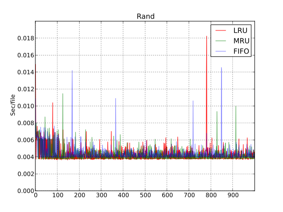
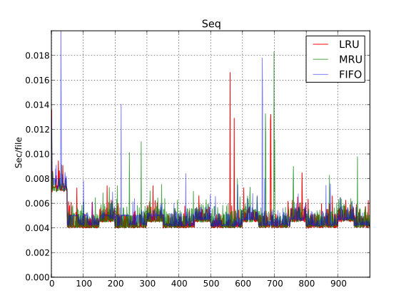
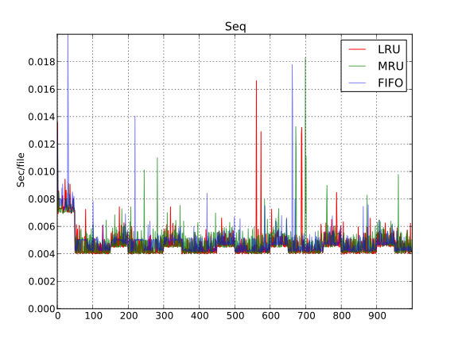

100 КилоБайт

Ниже представляю результаты работы одного клиента с различными вариантами кеширования. Стоит отметить, что тесты велись со следующими настройками: 1000 чтений случайного файла из 50 случайно сгенерированных при размере кеша в 64MB. При таком размере кеша - результаты маленьких файлов (менее МегаБайта) ни о чем не говорят, так как кеш даже не успевает заполниться. На файлах размера 1МБ кеш тоже не успевает заполниться, однако они полезны, так как на них уже видна грань между чтением с сервера и чтением из кеша.
 

Как и было предположено - графики алгоритмов в целом одинаковые и схожи даже при смене правила доступа к следующему файлу со случайного на последовательное. Очевидно, что алгоритмы кеширования не используются
Как и было предположено - графики алгоритмов в целом одинаковые и схожи даже при смене правила доступа к следующему файлу со случайного на последовательное. Очевидно, что алгоритмы кеширования не используются
На 10 МегаБайтах отчетливо прослеживается разница в работе MRU от "очередных" алгоритмов. Однако MRU ведет себя также стабильно, из чего следует не проигрывание алгоритма, а, скорее, неоптимальность его реализации - на той же структуре данных MRU реализовывается за счет добавочной операции "разворачивания" списка. Так как в нашем случае эти результаты важны лишь для общего сравнения и решения о целесообразности дальнейшей работы - можно не обращать внимания на это недоразумение. Впоследствии, алгоритмы будут реализованы каждый на своей оптимальной структуре данных и проблема должна уйти.

Если на мелких файлах MRU проигрывал за счет неоптимальности размещения в памяти - в случае, когда каждый следующий файл требует вытеснения предыдущего из кеша видно, что MRU требует меньше времени, чем остальные реализации - что очевидно, ведь в таких тестах чтение предыдущего файла почти не повторяется (последовательно - лишь через каждые 40 файлов, случайно - с очень низкой вероятностью). Также, можно обратить внимание на относительную стабильность графика FIFO - ведь этот алгоритм не требует никакой логики перебалансировки, которая встроена в LRU/MRU.